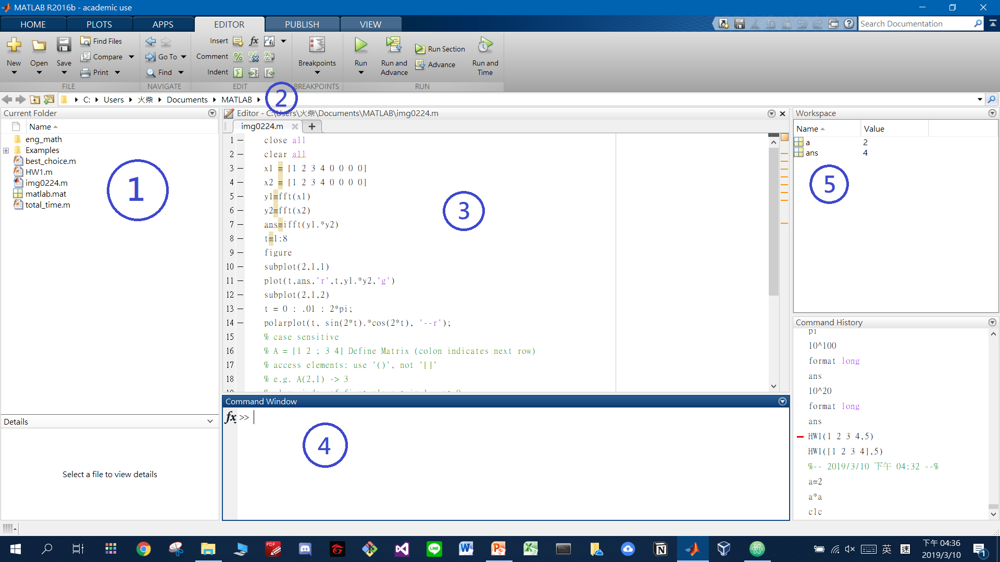
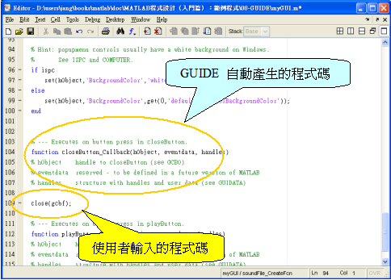

🐦Matlab
Ch.0 Basics
Matlab:
✔️
- Easy to use (toolbox, easy to code and see result)
- Graphical Interface (plot, 3D, spectrum, ...)
❌
- Not used in industry
- Commercial (not free)
- Lacks low-level compatability
Environment

1. Current Folder
- 顯示Working Folder下的所有file
2. Current Path
- 顯示目前Working Folder
- 如果要import
.m之類，就要放同一個folder比佢讀
3. Editor
- 類似寫program，寫完全部再禁
run或者係Command window call就ok - Script: 即係將一連串Command濃縮成一個file
- Function: Input Process Output
- 留意用function的話, file name要同function name一樣
- ➡️ works like compiler
4. Commmand Window
- 同Terminal差不多, line by line execution
- ➡️ works like integrator
5. Workspace
- 顯示目前有定義的variables
- 如果無指定variable name, 最近一次計算結果就會叫
ans
Styles
- Case Sensitive -- 細
x同 大X係兩個完全唔一樣的變數 - Code Indent -- Highlight完可以用右鍵->Smart Indent 或直接
ctrl+i自動幫你indent - Default data type -- double precision floating point
- Comment
%(一行)ctrl+r= Quote哂highlight緊ge野ctrl+t= De-quote
- Reserved Word -- 有內建一堆預設數值的字(可以rewrite)
- e.g.
pi
- e.g.
- End of line --
;-
可加可不加
- 有加: nothing special
- 無加: 會係execution過程將個value print出黎
-
Examples:
-
a=1; (只會出現係Workspace入面) b=2 (print: >> b = 2)
Creating a Matrix
- Matrix: Mathematical Representation
- Array: data storage form
- n-by-m matrix/array:
- n = rows (橫列)
- m = columns (直行)
- Vector: 1-dimensional array
- Access an element: 呢邊最大分別係用細括號
()而唔係中括號[]去抽element- 另外, first element係1, 唔係0
- e.g.
A(1,2)Matrix: row 1, col 2 of A
- Defining a Matrix:
A = [1 2 ; 3 4] whos A B = [1 2 3 4] whos B % results: A size = 2x2 % results: B size = 1x4
[]入面分號;代表換行，elements之間有無逗號都無所謂
Iterations / Selections
break:直接脫離一切while, for loop
for loop
- Example 1
for i = 1:10 a(i)=i; end % 結果為save 1-10的vector (length=10)
- Example 2
for i = (2 4 1 3 5 6 10 9 7 8) a(i)=i; end % 同上面結果一樣，不過可以學下for loop `i` 的用法 -> 直接指定一set數值比佢行
- Example 3
counter = 0; for i = 0:0.1:10 counter = counter+1; a(counter) = i; end % 結果為length = 101的vector，內容為 0, 0.1, 0.2, ..., 10 % 呢邊同樣可以留意for的用法，中間係interval
- 小心for loop陷阱
for (index = start:interval:end)- 如果係
for i=1:2:10,i會係9停低,i: 1->3->5->7->9
while loop
i = 1; while (i < 10) i = i+1; end % 結果: i = 10
if
i=1; if (i<10) i = i+1; end
else直接寫係if後面, 唔需要end完再開elseend
Switch
i = 0; while (i<3) switch i case 1 i = i+1; case 2 i = i+2; otherwise i = i+3; end end % 好似唔駛每個case後面都加break % 另外 default 變成 otherwise
Function
- Example
function [y1,y2] = name_of_fun(x1,x2) y1 = x1 + x2; y2 = x1 * x2; return ;
y1,y2: output variables (optional)x1,x2: input variables (optional)name_of_fun: function name- 同program規則一樣, 第一個字唔可以係符號or數字
- return statement (optional)
Operators
只列出較特別的operator
| Operator | Meaning |
|---|---|
🚗 ^ |
power |
== |
equal to |
~ |
NOT |
~= |
Not equal to |
* |
Matrix multiply |
.* |
Array multiply |
^ |
Matrix power |
.^ |
Array power |
Frequently used Command
- 清mem3寶
clear: 清variableclose: 清figure/plotclc: 清command window記錄
- 通常係function/script file開頭都可以放個
clear all+close all咁就放心啦 clear亦可以獨立拎黎清一個variable/ function
whos: 查variable property (size, type, ...)help: 查function用法 e.g.help plotinput: 要求使用者輸入字串- Example:
reply = input('Input Below\n','s'); - 好似無得直接input數字, 限死你用
's'(?)
- Example:
randn: gen亂數, 詳情自己入help睇zeros/ones- 比一個parameter佢就會產生n*n的matrix ->
zeros(4): 4*4 matrix of '0' - 比兩個parameter佢就會產生n*m的matrix ->
ones(2,3): 2*3 matrix of '1'
- 比一個parameter佢就會產生n*n的matrix ->
length: 查變數長度size: 查變數dimensiondisp: Display array, debug神器 (或者直接變數後面唔加分號都得ge)- e.g.
disp('Hello'); - e.g.
someText = 'Hello'- 不加分號的話by default會print出黎，不過絕對唔好用係d大型matrix上面，會好麻煩
- e.g.
Graphics (plot, subplot, figure)
Graphic command要有先後順序，通常係:
figuresubplotplotgrid,legend之類
1. Plot
- Syntax 1:
plot(x,y,plot symbols); - Syntax 2: plotted 2 or more data on the same figure
plot(x1, y1, plot symbols, x2, y2, plot symbols);
t = 0:1:10; y = exp(t); plot(t, y, ‘r’) % red line plot(t, y, ‘rx’) % red cross plot(t, y, ‘ro-’) % red circle AND line plot(t, y, ‘ro:’) % red circle AND dotted line
2. Figure
- 功能 = 開新視窗
- Example
figure plot(t,y1,'r-',t,y2,'bx'); grid on xlabel('Hi'); ylabel('Bye'); legend('leg1','leg2');

3. Subplot
- Syntax:
subplot(number of rows, number of columns, plot index)
- Example
t = 0:1:10; s1=sin(t);c1=cos(t);t1=tan(t); ct1=cot(t);sec1=sec(t);csc1=csc(t); figure subplot(2,3,1); plot(t, s1); xlabel('plot 1'); subplot(2,3,2); plot(t, c1); xlabel('plot 2'); subplot(2,3,3); plot(t, t1); subplot(2,3,4); plot(t, ct1); subplot(2,3,5); plot(t, sec1); subplot(2,3,6); plot(t, csc1);
Results:

Matlab GUI
START
- Type
guidein command window'- GUIDE = Graphical User Interface Developing Environment
- Choose "Create New GUI" --> "Blank GUI" --> OK
- "Save" before you do anything
- Save完會自動產生兩個同名的檔案，一個副檔名係
.m，一個係.fig .mfor callback editing ,figfor creating new objects / adjusting
- Save完會自動產生兩個同名的檔案，一個副檔名係
Settings
- 顯示物件說明
- Matlab:
Home➡️Preference➡️GUIDE - Check
Show names in component palette✔️
- Matlab:
- 顯示尺規/格線
Tools➡️Grid and Rulers
- etc. 其他有咩想set就自己搵啦
GUI 3寶
set,get,gcf
Basics
- Create Object
- 直接拉入去figure就得
- 每次拉完新GUI object入去figure，都請你做以下動作:
- Right Click --> "Property Inspector" --> "Tag" --> 改做你自己想用的variable name
- 另外當你想直接用handles去
set某一件object的field時，亦可以用Property Inspector黎查個個field叫咩名，非常好用 - Others: Background Colors, String, etc...
- Create Callback Functions
- 每件object有各自的callback functions，想佢對特定動作有反應，就請你做以下動作:
- Right Click --> "View Callbacks" --> Choose the Function you want
- 簡完就會自動係
.m檔入面generate一段程式碼，再自行改動即可 - Types of Callbacks
- e.g. Button 有五種
Callback= 最常用到，需要互動的objects都係用呢個(e.g. button clicked,slider, ...)CreateFcn= 顧名思義DeleteFcn= 顧名思義ButtonDownFcn= 物件本身無Callback先會用到，滑鼠點擊即會觸發(e.g. axes)KeyPressFcn= (?) matlab forum係教你用另一個WindowsKeyPressFcn代替set(f,'WindowKeyPressFcn',@keyPressCallback);f= your figurekeyPressCallbackwill be triggered whenever the figure/GUI has focus and a key on the keyboard is pressed
- Debugging
- 建議你每次寫GUIDE的時候都拉一個Static Text/Edit Text 入去，方便Debug
- or use
disp(displayed on command window)
- or use
- 建議你每次寫GUIDE的時候都拉一個Static Text/Edit Text 入去，方便Debug
Frequently used command
uigetfile: pops up a dialog to select a file- e.g.
[filename pathname] = uigetfile({'*.*'});
- e.g.
fullfile: combines the path name and file name into a complete file name.
Callbacks
Callbacks (反應命令) = GUI物件被滑鼠點擊/操作時會執行的動作，若該動作是放置於Function底下，則稱為Callback Functions
reference: GUIDE 入門範例

gcbf 代表產生此反應命令的視窗，因此 close(gcbf) 即是代表關閉此 GUI 介面所在的視窗。這一類的指令相當好用，可整理如下：
- gcf: get current figure （取得目前視窗）
- gca: get current axes （取得目前圖軸）
- gco: get current object （取得目前物件）
- gcbf: get callback figure （取得發號反應指令之視窗）
- gcbo: get callback object （取得發號反應指令之物件）
Handles
- 官方翻譯叫"握把式物件" / "句柄"(?) 極難聽😖
- Match's Translate: Handles = 郵差 / 信件?
- 即係相當於一種Pre-defined Struct / Record data type，方便你將Local Variables傳出傳入
Passing Handles
Matlab Documentation:
guidata
1. Update/Saving
guidata(obj,data)- 呢邊
obj同data指的係某一種data type，不同情境下要pass不同variables- Argument 2 (
data) 即係matlab入面稱作 "handles" 既data type - 其實即係裝住GUIDE入面所有Graphical Components資料的variable
- Argument 2 (
- GUIDE ➡️
obj對應hObject,data對應handles- If you need to pass local variable out of that object in GUIDE, the correct code is
guidata(hObject,handles)
- If you need to pass local variable out of that object in GUIDE, the correct code is
- 呢邊
2. Retrieving
data = guidata(obj)- 呢邊
obj一樣係指data type,GUIDE =hObject - 而
data就係你自己用黎接住guidata傳出黎既資料的變數，名稱隨意data係matlab入面好似唔係reserved word,用help data搵無反應
- correct code:
wiki = guidata(hObject)
- 呢邊
- 當你要用handles入面某一個資料，其實可以直接拎
- e.g.
img = handles.stored_img - 當然亦可以分兩行寫:
wiki = guidata(hObject); %呢邊可以不加分號，咁Matlab就會將handles儲存緊的field print出黎 img = wiki.stored_img;
- e.g.